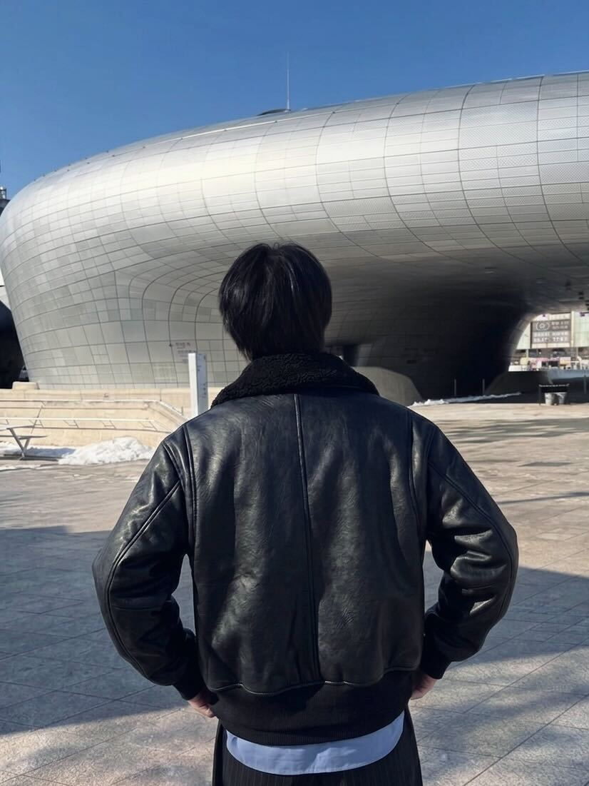

ニュートリノ・宇宙素粒子物理学実験
|
メンバー
スタッフ
 |
教授 南野 彰宏 みなみの あきひろ | 研究データベース@YNU e-mail: minamino-akihiro-nx[at]ynu.ac.jp 電話: 045-339-4182 |
|---|---|---|
 |
助教 Christophe Bronner クリストフ ブロナー | 研究データベース@YNU e-mail: bronner-christophe-xr[at]ynu.ac.jp 電話: 045-339-4182 |

|
研究員 Giorgio Pintaudi ジョルジョ ピンタウディ | e-mail: |
学生

|
M2 猪俣 侑希 いのまた ゆうき | e-mail: inomata-yuki-ky[at]ynu.jp |
|---|---|---|

|
M2 加藤 あおい かとう あおい | e-mail: kato-aoi-fy[at]ynu.jp |

|
M2 鐘 恩明 しょう おんめい | e-mail: zhong-enming-kv[at]ynu.jp |

|
M2 平田 大悟 ひらた だいご | e-mail: hirata-daigo-yc[at]ynu.jp |

|
M1 佐藤 樹 さとう いつき | e-mail: sato-itsuki-gn[at]ynu.jp |
| M1 城下 千剣 じょうか ちはや | e-mail: jouka-chihaya-wc[at]ynu.jp | 
|
M1 中西 風花 なかにし ふうか | e-mail: nakanishi-fuka-bf[at]ynu.jp |
| M1 Mara PRIPON マラ プリポン | e-mail: mara.pripon[at]polytechnique.edu | |
| M1 Clément BOUQUET クレモン ブケ | e-mail: clement.bouquet[at]polytechnique.edu | |

|
B4 小島 滉人 こじま ひろと | kojima-hiroto-bk[at]ynu.jp |
|
|
B4 佐藤 翔汰 さとう しょうた | sato-shota-vf[at]ynu.jp |
 |
B4 杉本 蓮 すぎもと れん | sugimoto-ren-bk[at]ynu.jp |
|
|
B4 武 飛龍 たけ ひりゅう | take-hiryu-py[at]ynu.jp |
|
|
B4 野村 洸成 のむら こうせい | nomura-kosei-tc[at]ynu.jp |
|
|
B4 古木 彩花 ふるき あやか | furuki-ayaka-fb[at]ynu.jp |
OB/OG
| 年月 | 氏名 | 異動前 | 異動後 |
|---|---|---|---|
| 2025年度 | 佐々木 優斗 | M2(2025年度) | 就職 |
| 2025年度 | 鈴木 深大 | M2(2025年度) | 就職 |
| 2025年度 | 高野 真綸 | M2(2025年度) | 就職 |
| 2025年度 | 堀口 大輔 | M2(2025年度) | 就職 |
| 2025年度 | 岩橋 快斗 | B4(2025年度) | 東京大学大学院進学 |
| 2025年度 | 北島 碧 | B4(2025年度) | 就職 |
| 2025年度 | 橋戸 詞音 | B4(2025年度) | 東京科学大学大学院進学 |
| 2024年度 | 伊藤 俊 | M2(2024年度) | 就職 |
| 2024年度 | 芝山 凌 | M2(2024年度) | 就職 |
| 2024年度 | 島村 蓮 | M2(2024年度) | 就職 |
| 2024年度 | 太田 幸寿 | B4(2024年度) | 東北大学大学院進学 |
| 2024年度 | 橋爪 康希 | B4(2024年度) | 東京大学大学院進学 |
| 2023年度 | 天内 昭吾 | M2(2023年度) | 就職 |
| 2023年度 | 工藤 悠仁 | M2(2023年度) | 就職 |
| 2023年度 | 守山 新星 | M2(2023年度) | 就職 |
| 2023年度 | 石舘 正太郎 | B4(2023年度) | 筑波大学大学院進学 |
| 2023年度 | 相馬 竜之助 | B4(2023年度) | 就職 |
| 2022年度 | 鈴木 芹奈 | M2(2022年度) | 就職 |
| 2022年度 | 永井 恒輝 | M2(2022年度) | 就職 |
| 2022年度 | 近藤 翔太 | B4(2022年度) | 東京大学大学院進学 |
| 2022年度 | 長村 篤芳 | B4(2022年度) | 就職 |
| 2021年度 | 佐野 翔一 | M2(2021年度) | 就職 |
| 2021年度 | 和田 航平 | M2(2021年度) | 就職 |
| 2021年度 | 栗田 蒼平 | B4(2021年度) | 就職 |
| 2021年度 | 小林 北斗 | B4(2021年度) | 東京大学大学院進学 |
| 2021年度 | 森田 大暉 | B4(2021年度) | 東北大学大学院進学 |
| 2020年度 | 片山 優菜 | M2(2020年度) | 就職 |
| 2020年度 | 佐々木 遼太 | M2(2020年度) | 就職 |
| 2020年度 | 谷原 祐史 | M2(2020年度) | 就職 |
| 2020年度 | 金島 遼太 | B4(2020年度) | 東京大学大学院進学 |
| 2020年度 | 藤中 崚 | B4(2020年度) | 京都大学大学院進学 |
| 2019年度 | 淺田 祐希 | M2(2019年度) | 就職 |
| 2019年度 | 岡本 浩大 | M2(2019年度) | 就職 |
| 2019年度 | 儀間 智美 | B4(2019年度) | 東北大学大学院進学 |
| 2018年度 | 山本 健介 | B3(2018年度) | 東京大学大学院進学 |
| 2017年度 | 松下 昂平 | B4(2017年度) | 東京大学大学院進学 |
| 2017年度 | 山口 大輔 | B4(2017年度) | 就職 |